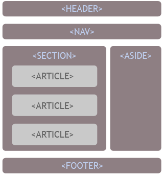
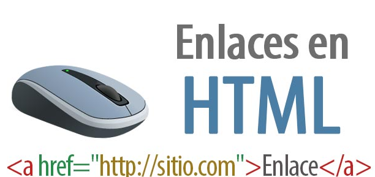

Proposito del sitio
El propósito de este sitio web, es contextualizar a los estudiantes sobre el uso de etiquetas semánticas,
listas y enlaces en el lenguaje de programación HTML5, orientando así, como definir correctamente la
estructura de un documento, se encontraran contenidos sobre las etiquetas HEADER, ARTICLE, SECTION, ASIDE,
FOOTER, NAV, FIGURE, TIME, entre otras, así como el uso de las listas y enlaces, fundamentales para que el
desarrollo de un código, no genere errores para los usuarios que quieran utilizar nuestro sitio web.
HTML5: Etiquetas semanticas
Las etiquetas semánticas, son parte fundamental en la programación en HTML5, ya que ayudan a definir la
estructura de un documento, estas etiquetas, sirven para que los motores de búsqueda sepan que parte de
su contenido, corresponden a las partes típicas de un sitio web. Sabemos que existe una forma lógica de
colocar todos los contenidos en los sitios web, por lo general, se utilizan etiquetas determinadas para
contenerlos. Algunos ejemplos son, HEADER, que se utiliza para la cabecera, definir los temas del sitio
con ARTICLE o los enlaces a las secciones principales del sitio con NAV.

HTML5: Listas
Las listas en HML5, representan uno de los principales medios para presentar contenido en una pagina web,
dentro de las listas, podemos encontrar las listas ordenadas, las listas no ordenadas y las listas de
definición.
Para las listas ordenadas y no ordenadas, podemos definirlas mediante las etiquetas “ol” y “ul”, luego,
su código suele ser seguido de un “li” para indicar cada punto en la lista.
Utilizamos las listas no ordenadas “ul”, cuando los elementos que queremos mostrar no necesitan llevar
un orden especifico, es decir, todos los puntos de las listas tienen la misma relevancia.
Las listas ordenadas “ol”, al contrario, tienen más relevancia el código donde colocamos cada elemento “li”,
de esta forma al momento de visualizar el contenido, se encontrara que se agrego una serie de números al
inicio, que indicara el orden en el cual se debe leer el contenido.

HTML5: Enlaces
Los enlaces en HTML5, se utilizan para direccionar a otra parte de la misma página (enlaces internos), es
importante resaltar que la pagina a direccionar debe ser lo bastante larga para que no quepa entera en
pantalla o halla que acceder a ella utilizando la barra de desplazamiento vertical. Generalmente los enlaces
se colocan al principio de la página, aunque podrían estar en cualquier parte de la página.
Para crear un enlace, utilizamos el elemento “Ancla” y dentro del elemento, colocamos el enlace
que redaccional a la página que queramos.
